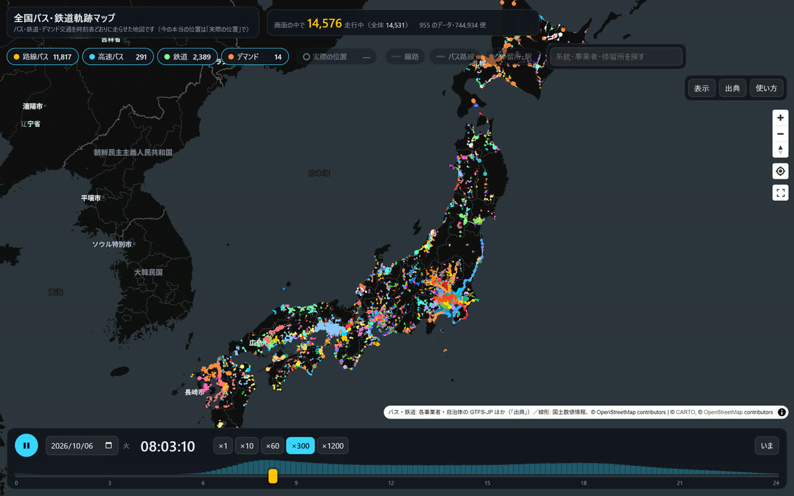
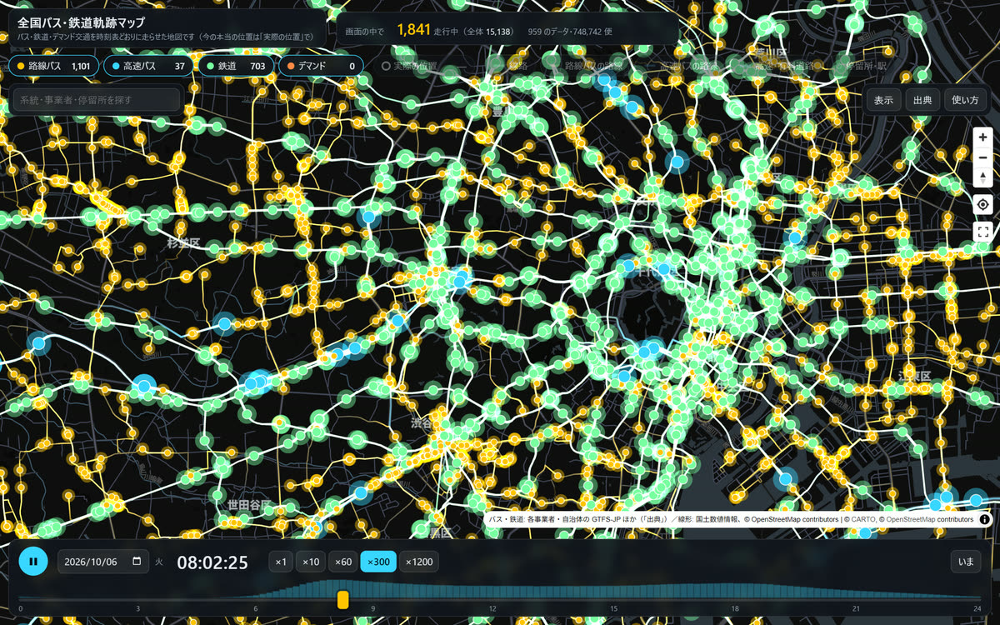
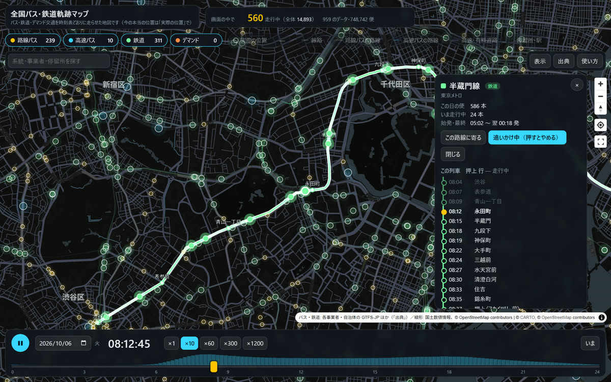
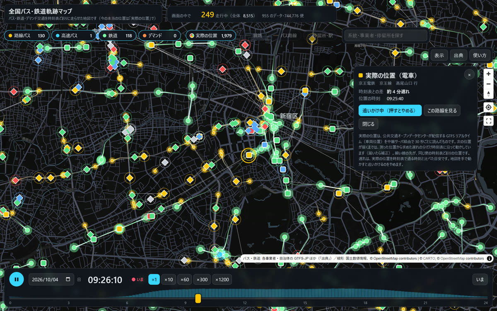
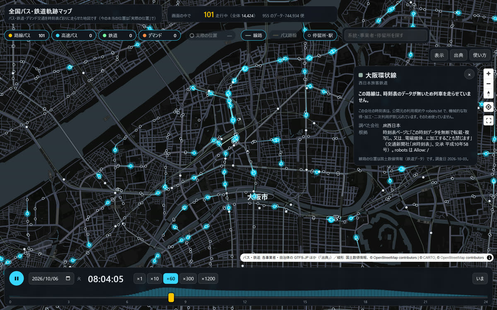
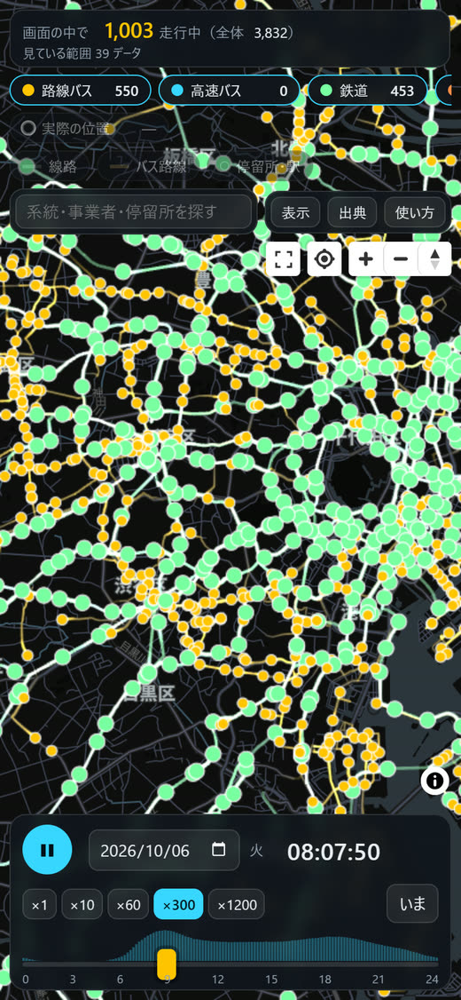

全国バス・鉄道軌跡マップ
マニュアル
日本全国のバス・鉄道を、公開されている時刻表どおりに地図の上で走らせ、その動きを光の軌跡で見せる Web アプリです。スマートフォンでもパソコンでも、ブラウザだけで動きます（インストール・登録は不要です）。
1このアプリについて
全国の事業者・自治体が公開している公共交通の時刻表データ（GTFS-JP など）を一つの地図に集め、約 74 万便（20 種類の入手先・850 事業者・955 のデータ）を時刻表どおりに走らせています。路線バス・高速バス・鉄道・デマンド交通を同じ地図で見られます。
- 時刻を動かしたり早送りしたりして、朝のラッシュに都市へ集まり、夜に郊外へ散っていく公共交通の一日を見られます。
- バスや列車を押すと、系統・行先・停車駅と時刻が分かり、その便を地図が追いかけます。
- 車両が配信している「いまの位置」（GTFS リアルタイム）を重ねて、時刻表との差（遅れ）を見られます。
- 時刻表が公開されていない地域は列車・バスが走りません。全国の駅・線路・バス停を出し、走らない理由も示します。

2画面の見方
光る点がバス・列車、後ろに伸びて徐々に消えていく尾が、通ってきた軌跡（残像）です。高速バスは大きめの点と太い軌跡、鉄道は太めの軌跡で描きます。

| 上の欄 | アプリ名、画面の中で走っている台数（かっこ内は読み込んだ全体）、乗り物の札（4）、実際の位置（7）、線路路線バスの路線高速バスの路線停留所・駅（8）、検索欄、表示出典使い方 |
|---|---|
| 右の地図のボタン | 拡大・縮小、方角（押すと北を上に戻す）、現在地、全体表示（日本全体に戻る） |
| 右の情報欄 | 押した系統・便・停留所・駅・車両の詳しい情報（5） |
| 下の欄 | 再生・一時停止、日付と曜日の区分（平日・土・日祝）、時刻、速さ（×1〜×1200）、いま、時刻のつまみ。つまみの下の帯は、その時刻に走っている台数のグラフです |
地図はドラッグで移動、ホイールやピンチで拡大・縮小できます。右ドラッグや 2 本指で回転もできます。
表示 では、軌跡の長さ（なし・3 分・10 分・20 分・30 分・1 時間）と、地図の明暗（暗い・明るい）を選べます。
3時刻と早送り
- 開いたときはいまの時刻で動いています（下の欄に「● いま」）。
- 下のつまみを動かすと、その日の 0〜24 時の好きな時刻にできます。
- ×10・×60・×300・×1200 で早送り。×300 なら 1 時間が 12 秒、×1200 なら 1 日が約 72 秒です。早送りすると尾が長く伸びます。
- 日付を変えると、その日のダイヤ（平日・土曜・日曜祝日）で走ります。祝日も見分けます。
- いま で現在の日時と ×1 に戻ります。
キーボード（パソコン）
- Space 再生・一時停止
- ← → 10 分戻す・進める（Shift を押しながらで 1 時間）
- Esc 選択を外す
4乗り物の切り替え
上の札を押すと、その乗り物を出したり消したりできます。札の数は、画面の中でいま走っている台数です。
| 路線バス | 一般の路線バス・コミュニティバス |
|---|---|
| 高速バス | 高速バス・空港リムジンなど（大きめの点・太い軌跡） |
| 鉄道 | JR・私鉄・地下鉄・路面電車など（約 10 万便） |
| デマンド | 予約して乗るデマンド交通。決まった経路が無いので、乗れる区域を、予約を受け付けている時間帯に光らせます。数は受付中の区域の数です |
点と軌跡の色は乗り物の種類です（上の札と同じ: 路線バス、 高速バス、 鉄道）。大きさは路線バス・鉄道（約 1.35 倍）・高速バス（約 1.7 倍）の順に大きく、拡大するほど大きくなります。
5系統・便・停留所・駅を選ぶ

6追いかける
- 便を選んで このバスを追う（列車なら「この列車を追う」）を押すと、地図がその便を真ん中に置いたまま動きます。
- 追いかけているあいだも、ホイール・ピンチで拡大・縮小できます（その便を中心に拡大します）。早送りしても追いかけ続けます。
- 地図を手で（1 本指・マウスで）動かすと、追いかけるのをやめます。もう一度ボタンを押すと再開します。
7実際の位置
上の 実際の位置 を押すと、走っているバス・列車が配信しているいまの本当の位置（GTFS リアルタイム）を、時刻表どおりの位置に重ねて出します。開いたときはオフです。

- 印の形: ひし形 = バス、 角の丸い四角 = 電車（白い縁と、ゆっくり明滅する輪）。時刻表どおりのバスの丸とは形で見分けられます。
- 印の色は時刻表との差: ほぼ時刻表どおり、 2〜5 分遅れ、 5 分以上遅れ、 早い、 時刻表の便と結べなかったもの。
- 印から伸びる細い線の先が、同じ便の時刻表どおりの位置です。
- 印を押すと、事業者・系統・行先・遅れ・位置の時刻が出て、地図がその車両を追いかけます。この系統を見る で時刻表の系統に切り替えられます。
- 位置の配信は 30 秒ごとです。そのあいだは、測った位置から求めた遅れの分だけ時刻表に沿って動かし、次の位置が届いたら直します。
- 実際の位置は「いま」のときだけ出ます。早送りや時刻の移動をすると消え、追いかけていた車両は時刻表どおりの追いかけに切り替わります。
- いまは公共交通オープンデータセンターの配信（都営バス・関東バス・京王バス・西武バス・横浜市営・川崎市・JR東日本・京王線・東武線など約 40）に対応しています。見ている範囲の配信だけを読みます。
8線路・バスの路線・停留所と駅
上の札で、背景の線と点を出したり消したりできます（開いたときはすべてオフ）。
| 線路 | 全国の鉄道の線路（国土数値情報）。押すと、その路線で列車を走らせているか、走らせていない理由が出ます |
|---|---|
| 路線バスの路線 | 路線バス（一般の路線・コミュニティバス）の通り道。淡い金色。押すとその系統を選べます |
| 高速バスの路線 | 高速バス・空港バスの通り道。シアン。押すとその系統を選べます |
| 停留所・駅 | 駅（白い点。少し拡大すると出ます）と、バス停（大きく拡大すると出ます）。灰色の小さな点は、時刻表のデータがまだ無いバス停（国土数値情報の全国のバス停 約 27.8 万か所）です |
9データの無い路線の理由
時刻表のデータが公開されていない、または使えない路線では、列車やバスが走りません。線路 や 停留所・駅 をオンにして、線路や駅を押すと、その理由が出ます。

- 理由は 3 つに分けています: 規約で機械的な利用（取得・加工・二次利用）が禁じられている／利用できるか規約からは判断できない／時刻表の公開が見つからない。
- 調べた会社、根拠（規約の該当箇所）、問い合わせ先、調査日も出します。鉄道 128 社の時刻表の公開状況と利用規約を調べた結果です。
- 駅を押すと、その駅の会社・路線ごとに、列車を走らせているか（走らせていれば路線のボタン）、走らせていなければ理由が出ます。
- 灰色のバス停を押すと、時刻表のデータがまだ無いバス停であることが出ます。
10スマホで使うとき
- スマートフォンでは、全国のデータを一度に読まず、見ている範囲のデータだけを読みます（上の欄に「見ている範囲 ○ データ」）。地図を動かすと、足りない分を読み、離れた地域は手放します。
- 別の地域へ大きく移動した直後は、読み込みが終わるまで少し待ってください。
- 上の札は横にスクロールできます。地図のボタンは横一列、地図の出典は「i」を押すと出ます。
- 2 本指で拡大・縮小・回転できます。2 本指の操作では追いかけをやめません。
- 現在地のボタンで、いる場所の近くのバス・列車を見られます（位置情報の許可が必要です。位置はこの端末の中だけで使います）。
- データの読み込みに通信を使います。Wi-Fi のある所での利用がおすすめです。

11データの出典とライセンス
アプリの 出典 に、使っているすべてのデータの一覧（データ名・入手先・ライセンス・便の数）とデータの作成日を出しています。主な入手先は次のとおりです。
| GTFSデータリポジトリ （gtfs-data.jp） | 全国の事業者・自治体のバス・鉄道・デマンド交通の GTFS-JP。ライセンスはデータごと（多くは CC BY 4.0） |
|---|---|
| 公共交通オープンデータセンター | バス・鉄道の GTFS-JP、デマンド交通の GTFS-Flex、バス・列車・駅の時刻表（API）、車両位置の GTFS リアルタイム。「出典：公共交通オープンデータセンター」。公共交通オープンデータ基本ライセンスほか（一部は公共交通オープンデータチャレンジ2026 の期間限定の利用許諾） |
| BODIK・自治体のオープンデータ | 名古屋市・長崎県・大分県・鹿児島市・仙台市・札幌市・石川県・沖縄 OTTOP ほか |
| 北海道オープンデータプラットフォーム（HODA） | 北海道内のバス事業者・市町村の GTFS-JP。北海道オープンデータ推進協議会、クリエイティブ・コモンズ・ライセンス 表示 2.1 日本（改変して利用） |
| 事業者・協会の公開 | 広島県バス協会、Bus-Vision、佐賀のバス、富士急バス、ことでん、各地のコミュニティバスほか |
| 国土数値情報（国土交通省） | 鉄道データ（N02）: 線路・駅、列車を線路に沿わせる。バス停留所データ（P11）: 全国のバス停。CC BY 4.0 |
| OpenStreetMap | 形状の無いバスの系統を道路に沿わせる道路データ（© OpenStreetMap contributors、ODbL）。背景地図は © CARTO、© OpenStreetMap contributors |
オープンデータではないもの（「出典」で区別して表示）: 神姫バス・鹿児島市電・伊予鉄道は、公式サイトの時刻表から組み直したもの（非公式・非商用）です。大阪シティバス・南海バス・山梨交通は、インターネット上で取得できるものの公開の案内が無い配信を使っています。
位置は時刻表をもとにアプリが計算したもので、加工したデータです。データの作成日は「出典」の下にあります。
12注意
- 地図の点は、公開されている時刻表どおりに走った場合の推定位置です。実際の運行とは異なります。遅れ・運休・臨時ダイヤは入っていません。（「実際の位置」をオンにしたときの印だけが、配信されている本当の位置です。）
- 停留所の間の位置は、時刻表の時刻と道路・線路の形から計算しています。形のデータが無い系統は、道路（OpenStreetMap）や線路（国土数値情報）に沿わせて補っています。
- 時刻表の期間が切れている事業者は、同じ曜日（土休日）の最後のダイヤで代わりに走らせ、「代わりのダイヤ」と表示します。
- 実際の位置の遅れは、配信された位置を時刻表で通る時刻と比べた目安です。配信が遅れたり止まったりすることがあります。
- このアプリは非公式で、事業者・自治体・データの提供元とは関係ありません。公式サイトから組み直したデータについて、事業者へ問い合わせないでください。
- 乗車の前には、最新の時刻・運行情報を各事業者の案内で確かめてください。